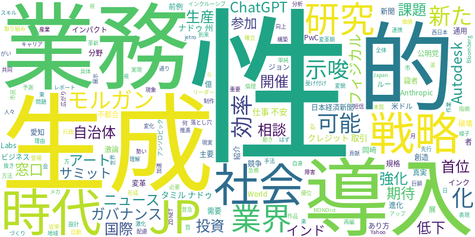

☁️ 今日のトレンドワード

📰 今日のピックアップニュース (10件)
AI社会到来、業界再編の波
PwCのレポートは、AIが社会と主要産業に破壊と創造をもたらす変革期であることを指摘。企業はAIの進化を理解し、戦略的な活用を通じて競争優位性を確立する必要がある。
JPモルガン、生成AIでクレジット取引革新
JPモルガンは、生成AIがクレジット取引業務に大きな変革をもたらすと予測。業務効率化や新たな分析手法の導入により、業界全体のあり方が変化する可能性を示唆している。
AI時代のガバナンス、日本企業に課題
AIの普及に伴い、日本企業はAIガバナンスの構築が急務となっている。国際規格への対応や倫理的配慮など、企業が向き合うべき具体的な課題と取り組みが論じられている。
自治体、生成AIで窓口・相談業務を強化
公明党は、自治体における生成AIの活用が進んでいることを紹介。窓口対応や市民からの相談業務への導入により、行政サービスの効率化と質の向上が期待されている。
AI時代、仕事への不安と向き合う
AIの進化により、単純作業は自動化され、従来の働き方が通用しなくなる。AI時代に仕事を奪われる不安を拭い、自身の価値を高めるためのスキルアップやキャリア形成の重要性が示唆されている。
AIと障がい者アート、インクルージョン展開催
愛知県岡崎市で、AIと障がいを持つ人々が共同で制作したアート作品の展示会が開催される。AIが表現の可能性を広げ、インクルーシブな社会の実現に貢献する様子が紹介されている。
Anthropic、ChatGPT超え首位の勢い
AI開発企業Anthropicが、前例のない需要を理由にChatGPTを抜き首位に躍り出た。AI分野における競争の激化と、新たなリーダーの登場を示唆するニュースである。
Autodesk、フィジカルAI研究に巨額投資
Autodeskは、World Labsへ2億米ドルを戦略投資し、フィジカルAI研究を強化する。現実世界とAIを連携させる研究開発の加速が、ものづくり分野に新たな可能性をもたらすと期待される。
AI導入で生産性低下？「不都合な真実」
AI導入によって生産性が低下する現象について、識者らが激論を交わしている。AI活用における落とし穴や、期待先行による非効率な導入が問題視されており、本質的な活用方法が問われている。
インド・タミル・ナドゥ州、AIサミットに参加
インドのタミル・ナドゥ州が「AIインパクト・サミット2026」に参加することが発表された。AI技術の国際的な広がりと、各地域がAI戦略を推進する動きが伺える。
AI技術の進化は、社会全体に静かに、しかし確実に変革の波をもたらしています。PwCのレポートが示すように、AIは既存の産業構造を破壊しつつ、新たな価値創造の機会を提供しています。JPモルガンがクレジット取引業務への生成AI導入に意欲を示すように、金融業界をはじめ、様々な分野で業務効率化や革新が進んでいます。一方で、AI時代のガバナンスや、AIに仕事を奪われる不安といった課題も浮上しており、日本企業は国際規格への対応や、AIとの共存を見据えたキャリア形成が求められています。自治体も生成AIを活用し、市民サービスの向上を目指すなど、AIは生活の身近なところにも浸透し始めています。しかし、ビジネス+ITの記事が指摘するように、AI導入による生産性低下という「不都合な真実」も存在し、単なる技術導入だけでなく、組織文化や人材育成といった側面からのアプローチが不可欠です。また、AnthropicがChatGPTを凌ぐ勢いを見せるなど、AI開発競争は激化しており、AutodeskのフィジカルAIへの巨額投資からも、AIの応用範囲が物理世界へと拡大していく様が伺えます。タミル・ナドゥ州のAIサミット参加は、AIがグローバルな社会課題解決や経済発展の鍵となることを示唆しており、AIとの賢い付き合い方が、これからの社会を生き抜く上でますます重要になっていくでしょう。